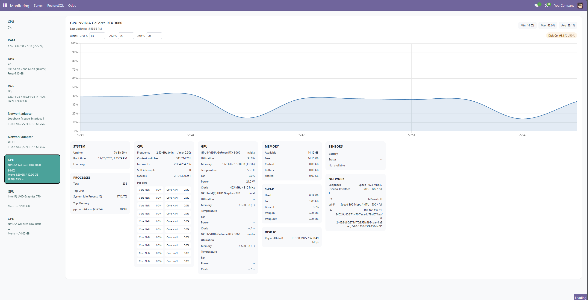
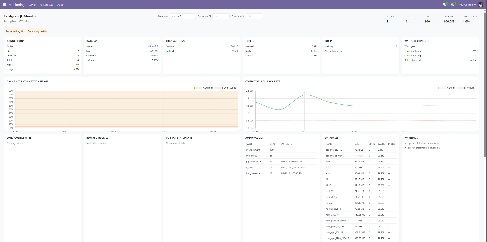
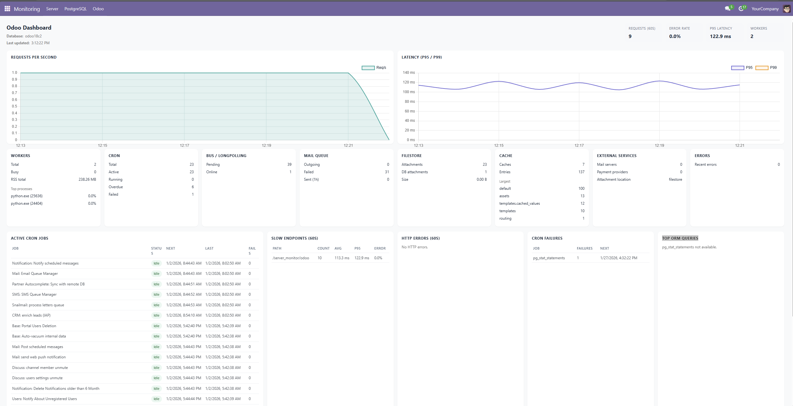
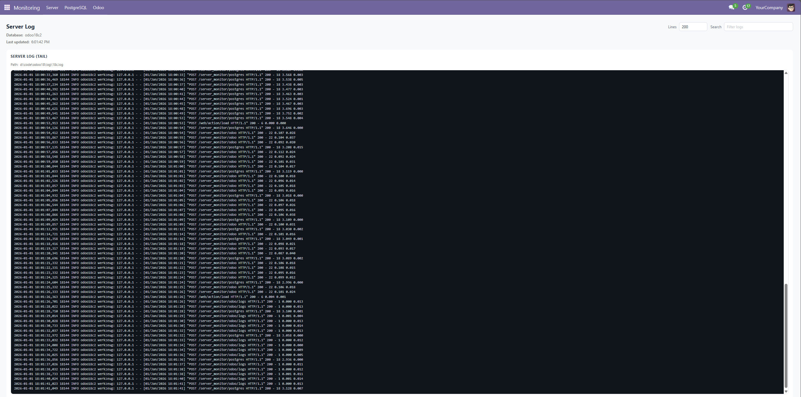

Real-time monitoring dashboards for server resources, PostgreSQL, and Odoo health in Odoo 18. Track CPU, RAM, disks, network, GPU, DB activity, and Odoo operations with live charts and focused detail panels.
Monitoring Server, PostgreSQL, and Odoo dashboards are available from the Monitoring menu. The Odoo menu includes a dedicated Server Log view.



